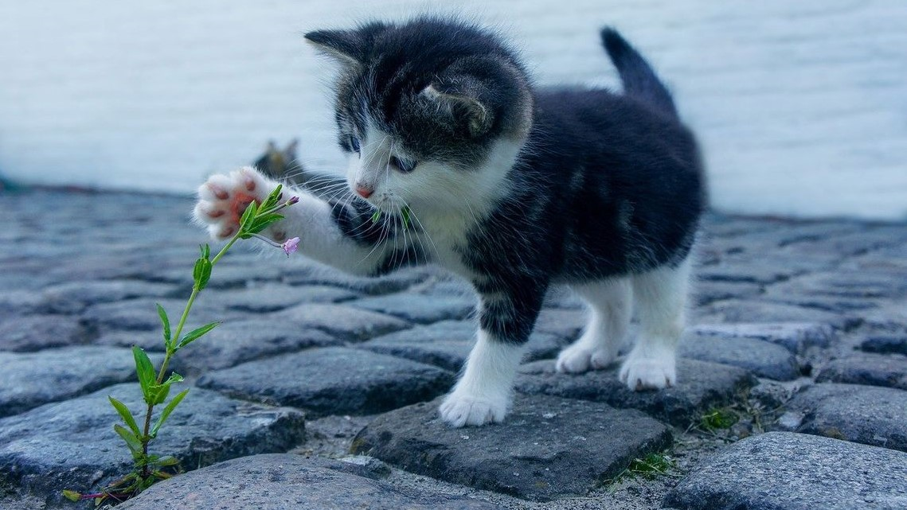
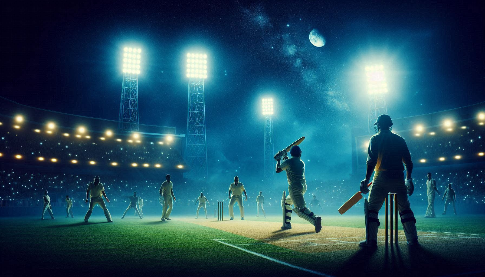

Are you looking to host your tournament online? Look no further! As a seasoned developer, I can help you create a seamless online experience to showcase your teams and players.
Contact me to:

The image is a beautiful sunset in a rural area. The sky is a deep blue with streaks of pink and orange, and the sun is setting behind the trees. The trees are silhouetted against the sky, and there are a few houses in the distance. The image is very peaceful and serene. The colors are beautiful, and the light is soft and warm. It's a perfect example of a sunset in the countryside.
We travel to various locations to connect with tournaments that are either ongoing or in the planning stages. Our goal is to provide an online presence for these tournaments, ensuring that teams and players receive the recognition they deserve.
We aim to be the go-to platform for cricket enthusiasts, providing detailed information on teams, players, and tournaments. Whether you are a fan looking to follow your favorite team or a tournament organizer seeking to promote your event, Crick Hosting Online is here to serve your needs.
Connect
We are dedicated to providing the latest information on cricket tournaments, team rosters, player statistics, and more. Our platform hosts comprehensive details about various cricket teams, including team names, player profiles, and images.
NOTE: Each cricket tournament has its own set of rules and regulations. As a player or team member, it's crucial to familiarize yourself with these rules before participating. Please consult with tournament experts or hosts to ensure you are fully informed and compliant.
Connect
The ground in the image appears to be a large, open, grassy field. It looks well-maintained with lush green grass and a clear blue sky overhead. There are some people in the distance, suggesting that the field is being used for recreational activities. The surroundings include some trees and shrubs, adding to the natural and serene environment. Overall, the ground looks suitable for outdoor activities and gatherings.

This is the most Expensive place for watch cricket with Special facility. image depicts a different type of ground. It appears to be a dry, more barren field with patches of grass, indicating less maintenance and a rougher terrain compared to the first image. The setting is being used for a game of cricket, as evidenced by the stumps and the players. The ground seems more informal and possibly located in a rural or semi-urban area. Despite the less lush conditions, it serves as a functional space for outdoor activities and community gatherings.

In this image, a group of people are playing cricket on a dusty, open field. The ground appears to be dry and barren, with little to no grass. The players are spread out, indicating an informal, casual game of cricket. The background includes some greenery and trees, with power lines and a pylon visible, suggesting the field is in a semi-urban or rural area. Despite the rough terrain, the field serves as an active space for recreational activities, showing the community's engagement in outdoor sports.

Disqualified in fifth round by Trauma Center Team. In 2021, our cricket team faced a tough tournament and unfortunately, we were eliminated in the 5th round. The team played with great spirit, and the experience was valuable for future competitions. Despite the loss, the players gained a lot of insights and are determined to come back stronger.

Playing Cricket in 47°C. some people taking shelter under a tree. You mentioned playing cricket and that the tree is helpful for the players to stay.

Need 44 Runs in 24 balls, ively scene where people are playing cricket, with one group taking shelter under a tree. Cricket, being a popular sport, often involves playing in open fields like the one in the second photo. It's great to see the players finding a bit of shade under the tree to rest between games or during breaks.

Flood in veruna River, from River cricket Ground, there is a narrow pathway or embankment dividing two bodies of water. The water on both sides appears calm, with vegetation and trees lining the banks. There are a few people visible on the pathway, possibly walking or observing the surroundings. Given the title "flood" for the uploaded file, this area might be experiencing flooding or high water levels, which could explain the water on both sides of the pathway. The pathway itself appears to be slightly elevated, providing a dry route through the water-logged area.

Hard ball to play match, is a close-up of a red cricket ball on a grassy field. The ball is slightly dirty and has some wear and tear, but it is still in good condition. The grass is green and lush, and there are a few blades of grass in the foreground. The background is blurred, but you can see some trees in the distance. The image is well-composed and the focus is on the cricket ball. The colors are vibrant and the lighting is good. The overall effect is a realistic and inviting image of a cricket ball ready to be played with.

The river is covered in a thick layer of green algae, and the water is murky. The banks of the river are lined with trees, and there is a light fog in the air. The Varuna River is a tributary of the Ganges River, and it flows through the city of Varanasi. The river is an important source of water for the city, but it is also heavily polluted. The pollution has caused the river to become choked with algae, and the water quality has deteriorated. The Varuna River is a sacred river to Hindus, and it is used for religious ceremonies. However, the pollution is making it difficult for Hindus to use the river for religious purposes. The Indian government is aware of the pollution problem in the Varuna River, and it is taking steps to address it. However, it will take time and effort to clean up the river.
watching cricket from under a tree with a cool breeze

Varuna River from Cricket Ground View looking good!
Is a close-up of a red cricket ball on a grassy field

The background is blurred, The image is well-composed and the focus is on the cricket ball
Sunsets are proof that no matter what happens, every day can end beautifully
Playing Cricket in 47°C. some people taking shelter under a tree.